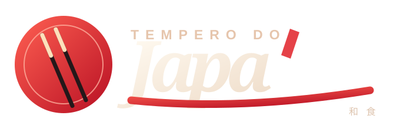
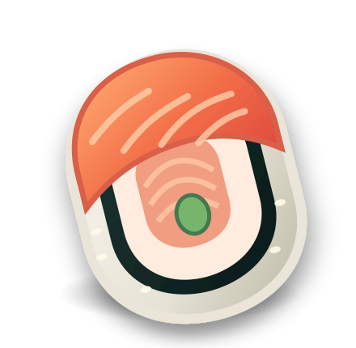

Feito para surpreender
Da seleção japonesa aos pratos especiais, tudo em um só lugar.

A magia da gastronomia japonesa encontra o seu momento. Dos sushis aos pratos especiais, cada escolha tem uma história para contar.

Role a página e acompanhe o hashi: uma pequena interação que apresenta o cardápio sem bloquear a navegação.
Da seleção japonesa aos pratos especiais, tudo em um só lugar.
Personalize opções disponíveis, quantidades e observações.
Uma sacola organizada em uma mensagem pronta para conferir.
Uma vitrine digital que valoriza o cardápio, organiza as opções e transforma curiosidade em uma experiência de navegação simples e marcante.
VER CARDÁPIO ↗Demonstração independente criada por Gunter Bauer Developer. Atendimento e pedidos de teste são encaminhados ao WhatsApp do desenvolvedor, não ao restaurante.